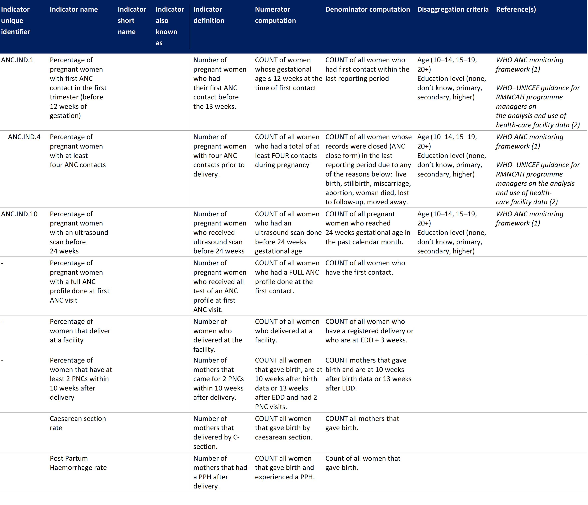
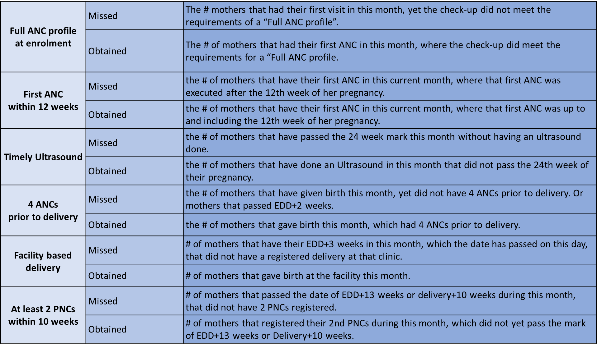
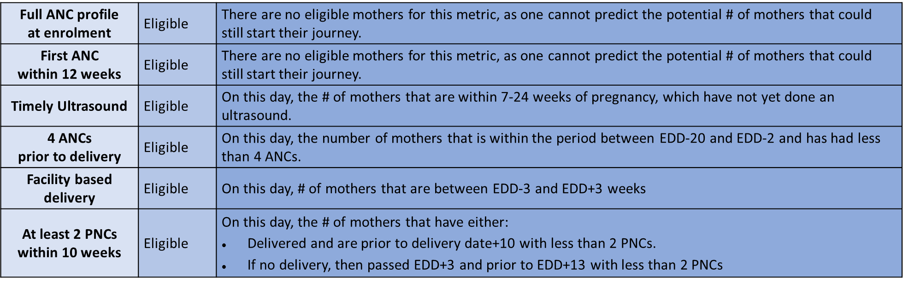

7. Indicators and performance metrics
This chapter details indicators and performance metrics that would be aggregated from core data elements for decision-making, performance metrics, and subnational and national reporting based on data collected from individual-level, routine health systems.
Mothers per trimester
The mothers per trimester table shows the number of mothers that have visited the clinic and have an active journey (within EDD + four weeks) per month. Mothers are shown that have visited the clinic at least once during their journey. AS a mother can fall in two trimesters within one month, we have decided to show the status at the 1st of the month. Table: Business rules for the stratification of care users across trimesters.
| Trimester | Start | End |
|---|---|---|
| First | Week 1 | Week 12 |
| Second | Week 13 | Week 26 |
| Third | Week 27 | Week 42 or date of delivery |
| Past EDD | Week 42 or date of delivery | Week 46 |
Obtained, missed and Attainable points
The list in the table below is a set of indicators that can be used to calculate the value points obtained and missed by a provider, which can be visualised in a dashboard. For these same indicators, the attainable points show the potential points that can still be obtained by a clinic in that month.

Definitions for procedures:
- Full ANC profile: Execution of all the following tests/measurements is required to meet the “Full ANC profile” during the first ANC.
- Vitals check (BP+Pulse+SPo2+RR)
- VDRL
- Haemoglobine
- Blood grouping
- HIV screening
- Blood pressure
- Urinalysis
- ANC: All other ANC visits require execution of at least the following tests / measurements to meet the requirements of an ANC:
- Vitals check (BP+Pulse+SPo2+RR)
- Urinalysis + PrCr
- Haemoglobin (HB)
- PNC: All PNC visits require execution of at least the following tests / measurements to meet the requirements of an PNC
- Vitals check (BP+Pulse+SPo2+RR)
Obtained value points
There is a limited time in which the different value points can be obtained per patient. The cut-off date and the total number of value points that can be obtained for each topic are displayed in the graph below. The week of pregnancy (gestational age) for a mother is calculated based on her Expected Delivery Date (EDD). In the care process, the EDD is estimated by adding 280 days to the first day of the last menstrual period (LMP).
| Criterium | Points | Cut-off date |
|---|---|---|
| ANC profile | 1 | 12 weeks |
| Early ANC | 1 | 24 weeks |
| Ultrasound before end of second trimester | 1 | 24 weeks |
| 4ANC | 2 | 42 weeks |
| Facility Based Delivery | 4 | 42 weeks |
| 2PNCs | 1 | 44 weeks |
Missed value points
If a mother does not obtain a value point before the cut-off date, we consider this value point as missed. Missed value points are linked to a missed date. The missed date is calculated based on the EDD and the cut-off weeks. A mother can go to different clinics during her journey. At this point, we only calculate missed value points for the clinic where the mother had her first visit.
Attainable Value Points
Attainable points are only calculated for the current date and defined for any topic that has not yet been obtained, but where the current date is earlier than the missed date. Attainable points are only given to the clinic where the mother had her first visit.
Missed and obtained Value Points
For each of the 6 indicators, the VP tool will show the number of mothers that have either obtained or missed that service in the current month. The logic used for determining when a service has been obtained or missed is described below. Similarly, the dashboard will show these indicators for historic months, where the same logic holds. The purpose of these indicators is to quickly identify in which areas a clinic has a high or low “Obtained” score, and to be able to compare that to previous months.

Eligible Value Points
For the current month only, the dashboard will also visualise the number of “eligible mothers”.
- Eligible mothers: On this given day, all mothers that are within the right time frame to obtain a service.
The goal of the “Eligible mothers” indicator is to induce action to be taken by the provider. As such, in this logic “Eligible mothers” for the previous months is always 0 because no actions can be taken anymore.
